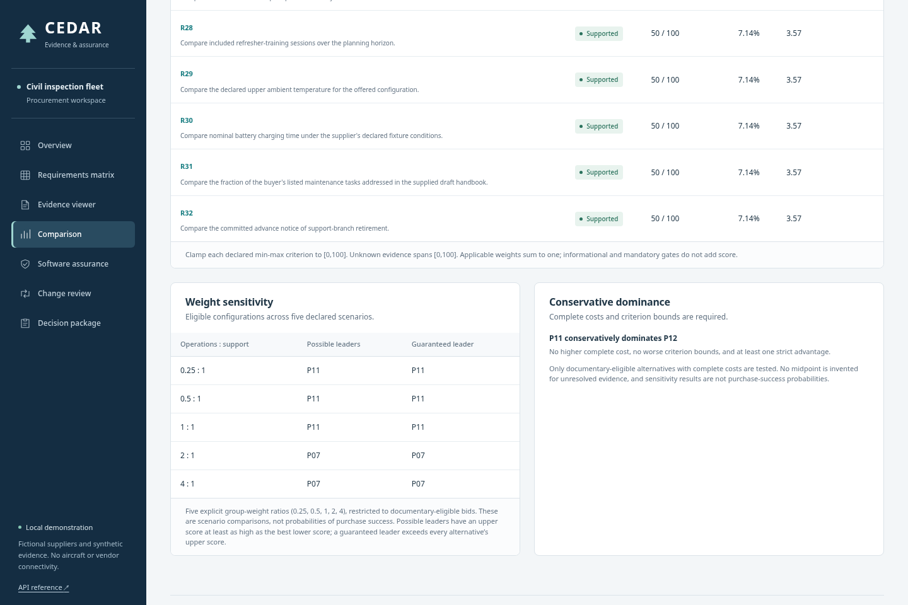

12 configurations40 requirements36 base documents601 baseline assertions
Start the meeting
Read the concise management brief, then follow the recorded change-and-review story.
Inspect the engineering
Trace the evidence model, arithmetic, failure corrections and adoption limits.
Verify the result
Open the portable decision, inspect its exact evidence, and reproduce the checks.
Prepare the next conversation
Use a bounded pilot proposal and implementation-grounded interview answers.
The demonstration
Start with an incomplete low quotation. Inspect the evidence, change the cost assumption, review a decision, then apply a supplier amendment. The previous approval becomes stale. A new conditional record preserves the open question.
Historical application capture, silent, recorded before the dark theme update. The recording and PDFs preserve the original light appearance. The accompanying narration script is a separate rehearsal guide. Recorded workflow duration: 213.5 seconds, including browser finalization; the encoded video duration is recorded in the completion report.
Evidence available for inspection
The recorded synthetic evaluation compares 2,952 requirement states with separately authored expected results. No state mismatches or unsupported baseline citations were observed. The three text layouts were designed for this parser; this result does not establish accuracy on unseen customer files.


